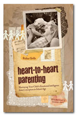

pagoda shell
photograph by
Chris Raggatt
Previous Seminars
Robin is available for public speaking on the topics of his book and his practise. To book Robin, contact seminars@our-emotional-health.com
Previous Engagements
Early Childhood Teacher’s Association (ECTA) conference, Brisbane, Australia, June 2012
Keynote address and two Masterclasses.
‘Light on Parenting’ Conference, London, May 2012
Keynote address and Masterclass.
‘Love, Fear and Shame in Early Childhood', Edinburgh UK, May 2012
One-day seminar.
Calmbirth Association Conference, 11th August 2011
Workshop on infant attachment, prenatal and perinatal psychology and brain development.
Mercy Family Services, 21st July 2011
Toowoomba Queensland, one day training for foster carers and social workers.
3 Days of workshops and seminars for parents, July 2011
Austin Texas.
CAPPA (Childbirth and Postpartum Professional Association) Conference, June 23rd 2011
Keynote Presentation and Seminar on Attachment, Los Angeles USA
Toowoomba Family Pathways Network Conference, 2010
School of Law, University of Southern Queensland
The Australasian Play Therapy Conference, 2009
Launceston, keynote presentation and workshops
Workshops in celebration of National Families Week: May 2008
1. PARENTING FOR A PEACEFUL WORLD
2. ATTACHMENT, THE BRAIN AND HUMAN HAPPINESS
3. CONNECTING WITH YOUR TODDLER AND CHILD - SETTING BOUNDARIES WITHOUT PUNISHMENT OR SHAMING
Parents Were Children Once, May 2008
DESCRIPTION: This talk is a fundraising event for the Kinma School and will include music, refreshments and a talk by Robin Grille followed by a book signing.
November 2007, New Zealand seminar tour
1. Parenting for a Peaceful World
2. Connecting with your Toddler and Child - Setting healthy boundaries without punishment 3. Core Emotional Development in the First Seven Years - A journey through the first five rites of passage of core emotional development. Practical implications for teachers and health practitioners.
The 13th International Congress of APPPAH, the Association for
Prenatal and Perinatal Psychology and Health - Birth and the Human Family:
Embracing the Power of Prenatal Life1. 'Parenting for a Peaceful World'
- child rearing reforms are the driver of human rights and sustainability,
and: 2. 'Birth and Civilization: Exploring the Vital Connection' - A workshop,
with David Chamberlain Phd.
'Connecting with your toddler and child'
This talk is a fundraising event for the Australian Breastfeeding Association, and it will be about how to make contact with your child in authoritative rather than authoritarian ways: how to take charge and set boundaries strongly and effectively, without recourse to punishment or shaming.
Strategies for counsellors, therapists, nurses and other health practitioners to help parents overcome psychological resistances to breast-feeding.
A three-hour workshop for breastfeeding counsellors and health practitioners.
'Fear and loathing of being a parent',
A paper to be presented at the 'Hot Milk' National conference for the Australian Breastfeeding Association, about the nature of psychological impediments to full-term breastfeeding encountered by many parents.
Writing about being a parent (Panel discussion with Ruth Ostrow, Vanessa Gorman and Mark Ragg). Byron Bay Writer's Festival. August, 2006
'When parents were children'. The Psychophysical Therapists'
Guild AGM, Anzac Memorial Club. Cammeray, Sydney. August 2006.
Our memories of how it felt to be a child, at every stage of development,
are perhaps the most powerful influences on how we parent our children.
Our childhood histories often drive our parenting choices beneath our
conscious awareness. Bringing emotional memory - from the earliest moments
of life - to the light of understanding can therefore be a profound service
to the parenting relationship. There are wonderful and important implications
for practitioners who work with parents and their children.
PEACE PARK CONCERT Guest speaker: - 11th anniversary event. Oxford Falls Peace Park, August 2006.
Emotional Intelligence in the classroom. International Democratic Education Conference. Riverview, Sydney. July 2006.
'The Changing Face of Parenting in the New Millennium' - Australian Breastfeeding Association, NSW Branch, Continuing Education
Conference. Collaroy, Sydney. May 2006.
DESCRIPTION: This seminar shows how new, more natural trends in parenting have been
transforming societies, bringing us more justice, democracy, sustainability
and human rights.
'Challenging McFuture: Child-rearing reform!' Melbourne, February 2006
'The Changing Face of Parenting in the New Millennium' Merimbula , February 2006
'Childhood through the Ages' Sydney, February 2006

"Stunning, absolutely fascinating! You'll
never think about childhood the same way again..."
Sandy McCutcheon, ABC Radio National
This is the book that could save the world, if we
can only pay attention.
Jan Hunt, MSc, Director of The Natural Child
Project
Robin Grille’s book is filled with gems for
anyone passionate about our future. This book should be required reading
for all parents, politicians, social change activists, teachers, leaders
and visionaries.
Kali Wendorf, editor, Byronchild magazine, Australia
ANNOUNCMENTS:
OWING TO STRONG DEMAND, 'PARENTING FOR A PEACEFUL WORLD' HAS
GONE INTO IT'S SECOND PRINT RUN!
December 2005
"PARENTING FOR A PEACEFUL WORLD"
RECEIVED A SPECIAL COMMENDATION FOR
THE 'WILD & WOOLLEY' PRIZE, 2005!
Emotional Intelligence :: Publications :: Counselling Services :: About Robin Grille :: Contact :: Links :: Home
Our Emotional Health web site built by Slam; best viewed at minimum 800x600 resolution. Copyright 2005